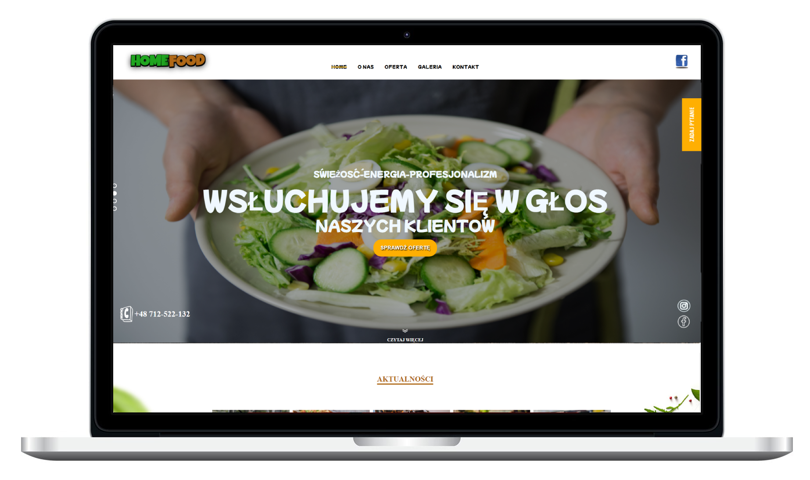
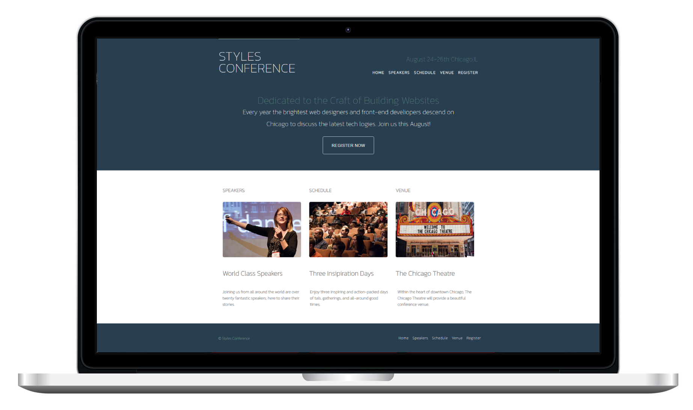

Programista stron internetowych zorientowany na frontend, budujący frontend stron internetowych, który prowadzi do sukcesu całego produktu
projektyTutaj znajdziesz więcej informacji o mnie, czym się zajmuję oraz o moich aktualnych umiejętnościach głównie w zakresie programowania i technologii
Jestem Frontend Web Developerem budującym front-end stron internetowych, który prowadzi do sukcesu całego produktu. Zobacz niektóre z moich prac w dziale Projekty.
Jestem otwarty na oferty pracy, w których mogę wnieść swój wkład, uczyć się i rozwijać. Jeśli masz dobrą oferte, która pasuje do moich umiejętności i doświadczenia, nie wahaj się ze mną skontaktować.
contacthtml
css
javaScript
scss
github
git
Responsive Design
Tutaj znajdziesz niektóre z projektów osobistych, które stworzyłem, z każdym projektem zawierającym własne studium przypadku

HOMEFOOD to stworzony przeze mnie szablon internetowy skierowany do branży cateringowej, który każdy może wykorzystać do zaprezentowania swojej firmy online.
wiecej informacji
Odtworzyłem interfejs przykładowej strony internetowej STYLES CONFERENCE, ponieważ przyciągnął mnie ich ciekawy interfejs użytkownika. Zbudowanie całego frontendu było dla mnie wspaniałym doświadczeniem.
wiecej informacji
TIRPOl to koncept strony dla firmy wielousługowej logistyczno-transportowej, którą stworzyłem od podstaw, korzystając ze znanych mi narzędzi frontendowych.
wiecej informacjiSkontaktuj się ze mną, przesyłając poniższy formularz, a ja skontaktuję się z Tobą tak szybko, jak to możliwe